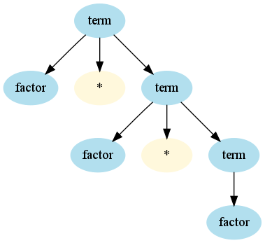
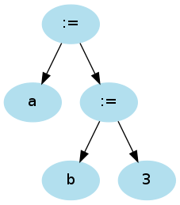
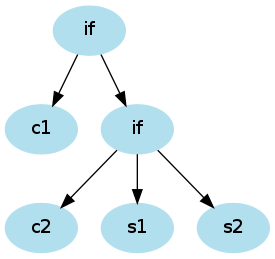
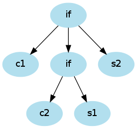

expr ::= term (( "+" | "-" ) expr)?
term ::= factor (( "*" | "/" ) term)?
factor ::= wholeNumber | "(" expr ")"
expr term factorwholeNumber "(" "+" ...
[10][10][20]
bounds ::= bound | bound bounds bound = "[" number "]"
bounds ::= (bound)+
def bounds = bound ~ rep(bound) ^^ { case head ~ tail => head :: tail }
bound = "[" ~> number <~ "]" ^^ { _.toInt }
rep1 convenience combinator
def bounds = rep1(bound)
No transform needed
id(arg1, arg2, ...)
funcall ::= ident ~ "(" ~ expr ("," expr)* ")"
def funcall = ident ~ "(" ~> repsep(expr, ",") <~ ")"
repsep returns List without separators; here, List[Expr]
* / stronger than + -:
expr ::= term (( "+" | "-" ) expr)?
term ::= factor (( "*" | "/" ) term)?
factor ::= wholeNumber | "(" expr ")"
term ::= factor (( "*" | "/" ) term)?
factor ::= factor1 ( "^" factor )?
factor1 ::= wholeNumber | "(" expr ")"
== <>
expr ::= expr1 (( "==" | "<>" ) expr)?
expr1 ::= term (( "+" | "-" ) expr1)?
term ::= factor (( "*" | "/" ) term)?
factor ::= wholeNumber | "(" expr ")"
assignment ::= ident ":=" assignment | ident ":=" expr
a := b := 3
parses as

3 + 4 * 5expr ::= term (( "+" | "-" ) expr)?term → factor → wholeNumber, back in term:
term ::= factor
term ::= factor ("*" | "/") term
("*" | "/") term? No—next token is "+"expr ::= expr "+" term | term
expr must be a term
expr ::= term | term rest rest ::= "+" term rest
def expr = term ~ rep("+" ~> term) ^^
{ case a ~ lst => (a /: lst) { Sum(_, _) } }
(See previous lecture for details)
A ::= α β | α γ
it can't be LL(1)
Assignment statement and procedure call both start with identifier
stat ::= ident ":=" expr | ident "(" expr ("," expr)* ")" | ...
stat ::= ident rest | ...
rest ::= ":=" expr | "(" expr ("," expr)* ")"
opt and match
def stat = ident ~ (":=" expr | "(" expr ")")
if with optional else
ifstat ::= "if" "(" expr ")" stat ("else" stat)?
if (c1) if (c2) s1 else s2 or
(("if" ~ "(") ~> expr <~ ")") ~ stat ~ opt("else" ~> expr)
<...>
<expr> ::= <term> | <term> (+ | -) <expr>
Then no "..." around terminals
[...], {...} instead of (...)?, (...)*
lab10/report.txt inside the Git repo. Include the coder's name in the report! < name>
Which grammar rule did you use to answer this question?
/> in an empty-element tag?
<name />
Which grammar rule did you use to answer this question?
= in an attribute?
<name attr = "value">
Which grammar rule did you use to answer this question?
expr ::= "if" "(" number ")" expr ("else" expr)? | number
What is your program? What do you get when you parse
if (1) if (2) 3 else 4
else associates with the first or second if. Enhance your program to yield a IfExpr. Use the following outline:
class Expr
case class IfExpr(cond : Number, pos : Expr, neg : Expr) extends Expr
case class Number(value : String) extends Expr
class SimpleLanguageParser extends JavaTokenParsers {
def expr: Parser[Expr] = ...
def number: Parser[Number] = wholeNumber ^^ { Number(_) }
}
Transform cond ~ expr ~ None into IfExpr(cond, expr, null).
Now what do you get for
if (1) if (2) 3 else 4